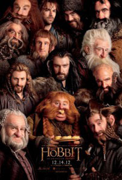

Review The Hobbit
Sabtu, 30 November 2013

Hampir satu dekade semenjak Peter Jackson merilis seri terakhir trilogi The Lord of the Rings, The Lord of the Rings: The Return of the King (2003), kini sutradara asal Selandia Baru tersebut bersiap untuk menggelar sebuah trilogi cerita lainnya dengan mengadaptasi novel The Hobbit yang menjadi prekuel dari seri The Lord of the Rings karya J. R. R. Tolkien. Benar… Jackson siap untuk membuat tiga film baru berdasarkan satu novel karya Tolkien. Rasa skeptis jelas akan membayangi banyak penonton atas keputusan Jackson tersebut. Apakah dunia membutuhkan sebuah perjalanan lain ke Middle Earth? Mampukah Jackson mengulangi daya tarik serta kesuksesan kualitas berkelas dari trilogi The Lord of the Rings (2001 – 2003)? Apakah The Hobbit hanyalah sebuah proyek yang bertujuan komersial belaka? Dan sayangnya, dengan apa yang disajikan Jackson pada seri pertama The Hobbit, The Hobbit: An Unexpected Journey, rasa skeptis tersebut sepertinya tidak akan begitu cepat menghilang dari benak banyak orang.
Berlatar belakang waktu 60 tahun sebelum dimulainya kisah The Lord of the Rings: The Fellowship of the Ring (2001),The Hobbit: An Unexpected Journey memulai perjalanannya dengan kisah pertemuan antara Bilbo Baggins (Martin Freeman) dengan seorang penyihir bernama Gandalf (Ian McKellen). Dalam pertemuan tersebut, Gandalf meminta Bilbo turut serta melakukan perjalanan bersama segerombolan kurcaci yang dipimpin oleh Thorin Oakenshield (Richard Armitage) untuk merebut kembali wilayah kekuasaan mereka di Lonely Mountain yang saat ini dikuasai oleh seekor naga yang disebut Smaug. Walau awalnya menolak, Bilbo akhirnya turut serta dalam perjalanan yang penuh dengan tantangan dan hambatan berbahaya tersebut.
That’s it! Tidak kurang dan tidak lebih hanya itulah plot cerita yang terkandung dalam The Hobbit: An Unexpected Journey. Sederhana, namun berkat tangan dingin Peter Jackson yang menulis naskah film ini bersama dengan Fran Walsh, Philippa Boyens dan Guillermo del Toro, perjalanan tersebut mampu hadir menjadi sebuah presentasi film sepanjang 169 menit! Bagaimana Jackson melakukannya? Jackson memasukkan begitu banyak kisah sejarah dan latar belakang mengenai berbagai kejadian yang berhubungan dengan kisah utama dari The Hobbit: An Unexpected Journey, mengenalkan karakter-karakter yang berperan penting dalam kejadian tersebut, kisah persahabatan dan rasa saling menghargai antara para karakter yang secara perlahan terbentuk, konflik-konflik dengan beberapa karakter luar serta beberapa adegan yang secara tidak langsung berhubungan dengan seri trilogi The Lord of the Rings.
Dan perjalanan tersebut, harus diakui, sama sekali tidak berjalan dengan lancar secara sepenuhnya. Banyak bagian dalam penceritaan The Hobbit: An Unexpected Journey sebenarnya dapat saja dihadirkan dalam durasi penceritaan yang lebih singkat – adegan awal dimana para kurcaci berpesta di rumah karakter Bilbo Baggins atau adegan diskusi yang terjadi alam para peri, Rivendell – dan beberapa diantaranya bahkan dapat dihilangkan sama sekali – apakah adegan batu yang dapat hidup dan kemudian saling bertarung itu benar-benar dibutuhkan? Pun begitu, semua orang tahu bahwa Jackson adalah seorang sutradara yang cerdas. Meskipun adegan-adegan tersebut dihadirkan dalam durasi yang panjang dan terkesan tidak begitu esensial, namun Jackson mampu menghubungkannya dengan pembangunan karakter beberapa tokoh yang hadir dalam jalan cerita film ini, khususnya karakter Bilbo Baggins.

Perjalanan karakter-karakter dalam jalan cerita film ini juga tidaklah sedatar yang dibayangkan. Guna mengisi perjalanan panjang tersebut, Jackson menghadirkan banyak hambatan terhadap deretan karakter protagonisnya. Bukanlah sebuah jenis hambatan yang baru bagi mereka yang telah familiar dengan seri The Lord of the Rings, namun tetap saja masih mampu dihadirkan dengan daya tarik yang kuat. Jackson juga menghadirkan kembali beberapa karakter familiar seperti Frodo Baggins, Gollum, Galadriel, Elrond bahkan Saruman. Selain mampu memberikan nuansa nostalgia bagi para penggemar seri The Lord of the Rings, hadirnya kembali karakter-karakter tersebut juga harus diakui mampu memberikan tambahan warna bagi jalan penceritaan The Hobbit: An Unexpected Journey yang cenderung berjalan dengan satu nada dan warna yang sama di sepanjang durasi penceritaannya.
Jajaran pengisi departemen akting film ini juga mampu menghadirkan penampilan yang sangat solid. Nama-nama pemeran karakter lama seperti Ian Holm, Ian McKellen, Andy Serkis, Elijah Wood, Hugo Weaving, Cate Blanchett dan Christopher Lee masih mampu menghadirkan penampilan yang benar-benar hidup dan meyakinkan pada karakter mereka. Sama halnya dengan Martin Freeman, Lee Pace, Richard Armitage dan deretan pemeran kurcaci lainnya yang harus rela tampil dengan diselimuti tata rias yang membuat mereka tidak dapat dikenali. Chemistry yang mereka hasilkan juga sangat kuat dan sekaligus mempermudah penonton untuk lebih dapat mencerna isi perjalanan yang mereka lakukan.
Mereka yang menyaksikan The Hobbit: An Unexpected Journey dalam format 3D juga berkesempatan untuk mendapatkan pengalaman baru untuk menyaksikan sebuah film yang dihadirkan dalam kapasitas format gambar 48frame per second – atau lebih familiar dengan sebutan 48fps. Terobosan yang dihadirkan Jackson tersebut harus diakui terasa sedikit aneh pada awalnya: gambar yang dihadirkan menjadi (terlalu) jernih, (terlalu) tajam dan (terlalu) berwarna. Banyak yang membandingkannnya dengan seperti menyaksikan sajian tayangan film di layar televisi. Jauh lebih terang daripada format gambar berteknologi 3D standar. Penyajian gambar dalam format 48fps sendiri sama sekali tidak berpengaruh kepada kualitas cerita yang dihadirkan. Format tersebut kemungkinan besar hanya akan berpengaruh pada kenyamanan penonton yang telah terbiasa untuk menyaksikan film dengan format pencahayaan yang lebih redup. Pun begitu, harus diakui, format gambar dalam 48fps mampu menghasilkan gambar yang terasa lebih hidup, mewah dan nyata.
The Hobbit: An Unexpected Journey sesungguhnya bukanlah sebuah presentasi yang buruk. Namun, jika dibandingkan dengan tiga seri The Lord of the Rings sebelumnya, The Hobbit: An Unexpected Journey jelas terasa jauh dari kesan istimewa. Tidak seperti seri awal The Lord of the Rings, The Lord of the Rings: The Fellowship of the Ring (2001), film ini terasa kekurangan banyak energi dan ikatan emosional yang mampu menarik minat penonton untuk tetap bertahan dan terus mengikuti kelanjutan kisah film ini di seri berikutnya. Di banyak bagian, The Hobbit: An Unexpected Journey terasa bagaikan bagian kisah yang terbuang dari seri trilogi The Lord of the Rings karena kurang mampu menghadirkan esensi kisah yang kuat dalam jalan ceritanya. Pun begitu, dengan kesolidan penampilan para jajaran pengisi departemen akting film ini serta kecerdasan Peter Jackson dalam menghadirkan tampilan visual sekaligus pengarahan ritme cerita yang kuat, adalah cukup menarik untuk menunggu bagaimana trilogi baru ini akan berkembang di masa yang akan datang. Sebuah perjalanan awal yang terjal dan banyak tantangan, namun layak untuk terus dipertahankan untuk diikuti.